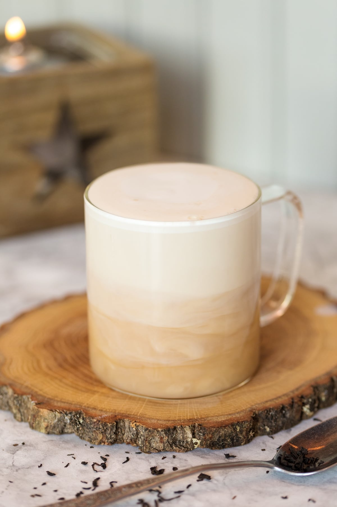

London Fog Latte

Description
A milk tea latte with Earl Grey as the base. Add steamed milk and lavender flavored syrup to elevate the drink.
Ingredients
- Milk
- Earl Grey Tea Bag
- Temperature Probe to measure liquid temperature
- Lavender Flavored Syrup
Recipe
- Add about 50 mL of hot water to steep the Earl Grey tea bag for 5 minutes
- Measure out 180 mL of milk
- Steam or Microwave the milk until it is around 60 degrees Celcius
- Combine Tea and Milk
- Add 1 spoon of Lavender Syrup (or to taste)
- Stir and serve.